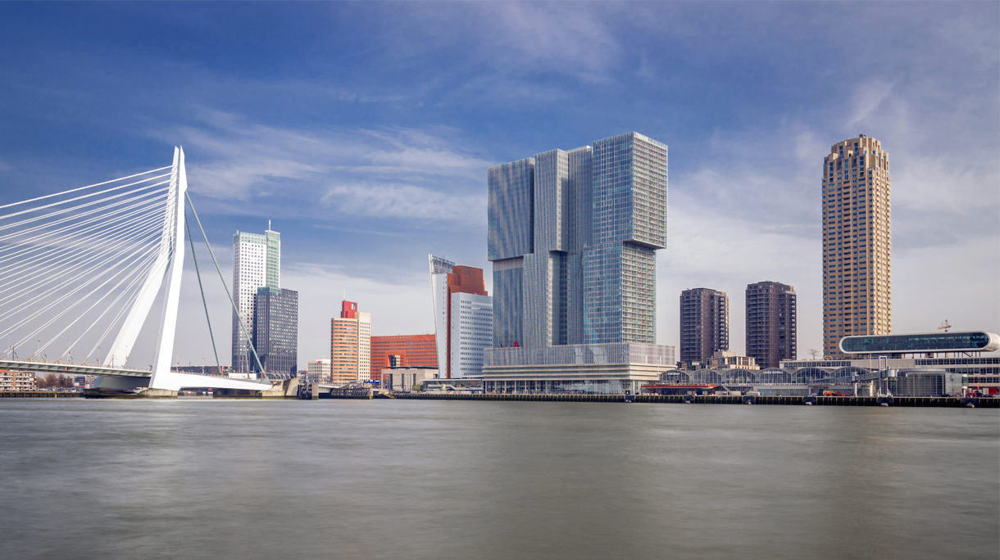

Ziekenhuizen | Belgium.be
 Overslaan en naar de inhoud gaan Menu
Language switcher
NL FR DE EN Nieuws Onlinediensten Contactinfo en sites Jobs Sociale Media myBelgium Belgium.be Informatie en diensten van de overheidMain Dutch Secondary Doormat
Gezondheidszorg Spoedgevallen Medische diensten Organisatie van de gezondheidszorg Ziekenhuizen Rusthuizen Thuiszorg Levenseinde Orgaan- en bloeddonatie Patientenrechten Medische kosten Gezond leven Handicap Geneesmiddelen Op reis Gezondheidsrisico s Home Gezondheid Gezondheidszorg Medische diensten Current Page: ZiekenhuizenZiekenhuizen
In België zijn er verschillende types ziekenhuizen die zijn erkend door de overheid en waarin patiënten zorg kunnen krijgen.
Raadpleeg de lijst van ziekenhuizen op de website van de FOD Volksgezondheid, Veiligheid van de Voedselketen en Leefmilieu.Â
Meer informatie over ziekenhuizen
in Vlaanderen in het Brussels Hoofdstedelijk Gewest in het Waals GewestÂ
Nieuws
Subscribe to Related Section News Alle nieuwsberichten 05/03/2021 Overlegcomité beslist buitenplan: vanaf 8 maart met meer mensen buiten 27/11/2020 Beslissingen van het Overlegcomité van 27 november 2020 13/11/2020 Overlegcomité bespreekt epidemiologische situatie en houdt bestaande maatregelen aan 06/10/2020 Overlegcomité beslist strengere maatregelen en duidt COVID-19 commissaris aan 12/08/2020 Waarom leeft ú de regels rond corona na?Adressen en websites
FOD Volksgezondheid, Veiligheid van de Voedselketen en Leefmilieu Website: https://www.health.belgium.be/nl Victor Hortaplein 401060 Brussel Telefoonnummer: 02/524.97.97 Belgische Vereniging der Ziekenhuizen Website: http://www.hospitals.be